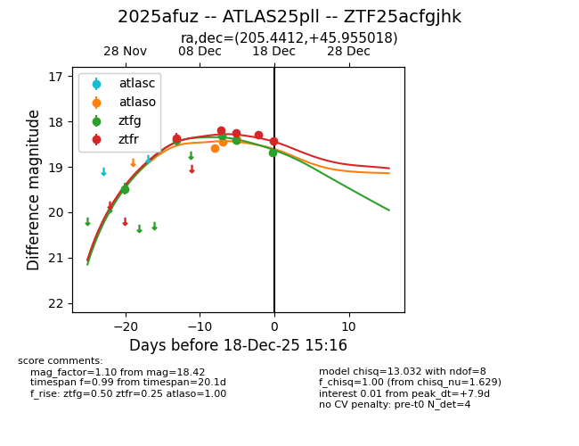
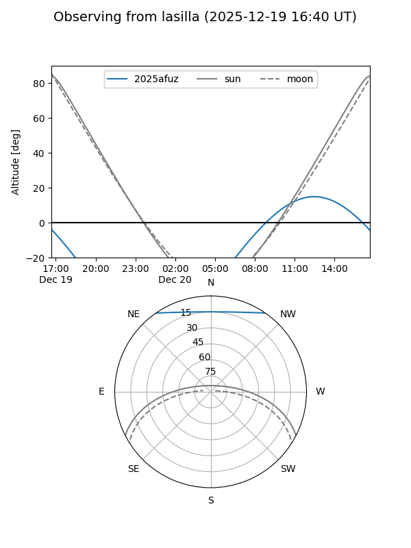
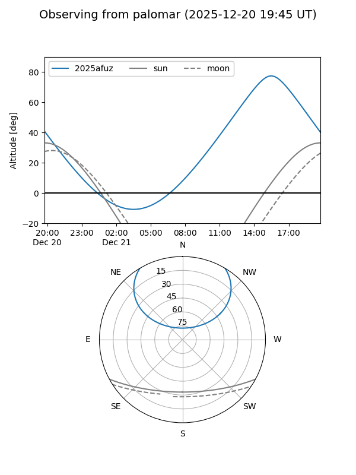
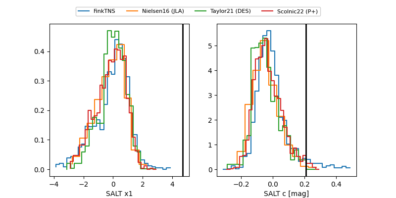

2025afuz
Target 2025afuz at 2025-12-18 13:52
Aliases and brokers:
FINK: fink-portal.org/ZTF25acfgjhk
Lasair: lasair-ztf.lsst.ac.uk/objects/ZTF25acfgjhk
ALeRCE: alerce.online/object/ZTF25acfgjhk
TNS: wis-tns.org/object/2025afuz
YSE: ziggy.ucolick.org/yse/transient_detail/2025afuz
alt names
ZTF25acfgjhk (ztf,fink_ztf)
2025afuz (tns,yse)
ATLAS25pll (atlas)
Coordinates:
equatorial (ra, dec) = 205.4412,+45.95502
equatorial (HMS+DMS) = 13:41:45.89,+45:57:18.06
galactic (l, b) = (98.3019,+68.69198)
Photometry
last atlaso=18.42, ztfg=18.69, ztfr=18.29
3 atlaso, 5 ztfg, 4 ztfr detections
Lightcurve

Visibility


Additional plots
